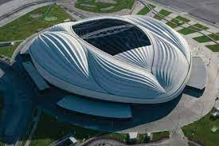
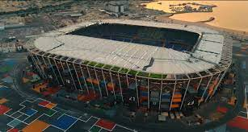
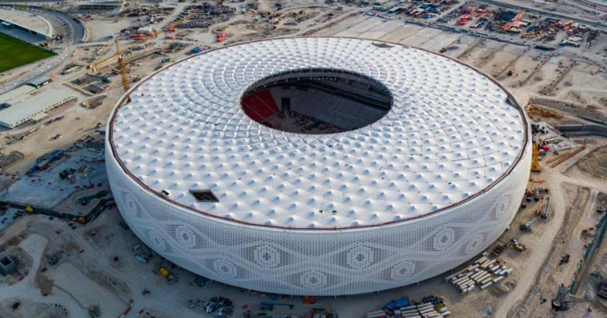
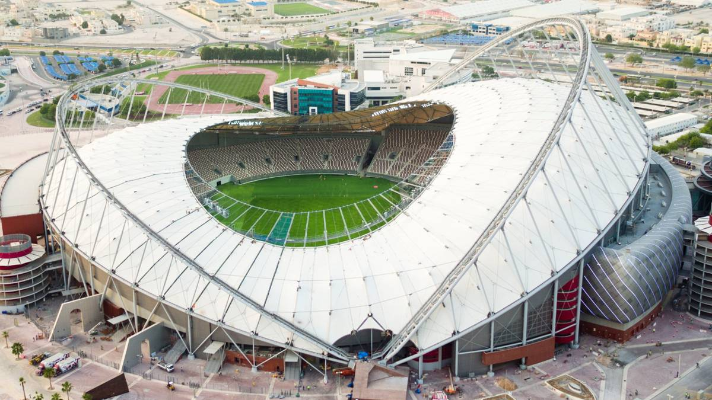
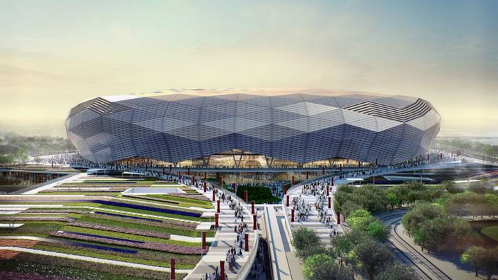
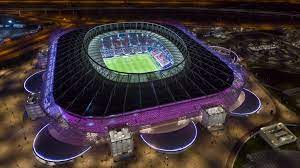

Catar hasta la actualidad confirmó ocho estadios en cinco ciudades para el mundial: Al Wakrah, Doha,
Rayán, Jor y Lusail, todas ellas albergarán los 64 partidos de la Copa Mundial.

Estadio Al Janoub "Al Wakrah", capacidad
40.000, tiene una pista de atletismo, se usara para los partidos de primera ronda y segunda

Estadio 974 "DOHA", capacidad
40.000, es la primera sede desmotanble ya que esta construido por contenedores reciclados.

Estadio Al Thumama "DOHA", capacidad
69.000

Estadio Internacional Khalifa "Rayán", capacidad
50.000, tiene una forma de diseño de un sombrero taquiyah tradicional del pais.

Estadio Ciudad de la Educación "Rayán", capacidad
45.350, donde hace de local su seleccionado y se juega el tercer puesto.

Estadio Ahmed bin Ali "Rayán", capacidad
44.740, su forma es como un diamante regular.

Estadio Al Bayt "Jor", capacidad
60.000, Estadio donde juega de local el equipo Al Rayyan de la liga de catar.